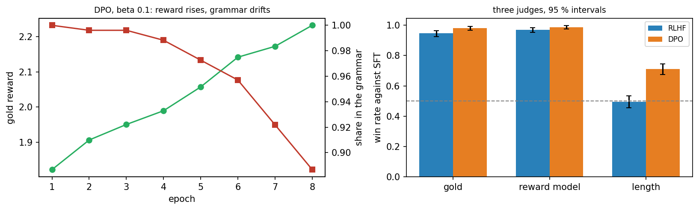

Overview
Reinforcement learning from human feedback, abbreviated RLHF, needs a reward model, sampling during training and careful tuning. Direct preference optimisation, abbreviated DPO, reaches the same goal with a simple classification loss on the preference pairs themselves [1]. This day derives the idea and compares DPO with RLHF on the same fine-tuned model and the same preference pairs. It then turns to a question that is harder than it looks: how to tell whether one aligned model is better than another. It compares judges and their biases [2, 3], puts intervals around every win rate and asks how many comparisons and seeds a claim needs [4].
Day at a glance
flowchart LR A["From the optimum to DPO"] --> B["DPO against RLHF"] B --> C["Judges and their biases"] C --> D["Intervals, sample size and seeds"] D --> E["Your judge"] E --> F["The final project"]
Every method on this page is also written as Python code in the Colab notebook of the day. A Colab notebook is a document of text and Python code that runs in the web browser, with nothing to install. Its code is divided into numbered sections. Each orange box on this page names the section whose code carries out what the text above the box explains. The box says what to run and what to look at in that section, and its button opens the notebook at that place. The practice parts and the self-assessment of the day are in the interactive lab.
From the optimum to DPO
Days 1 to 3 worked on the small TokenWorld of four tokens. Day 1 solved it exactly, Day 2 learned its values from experience, and Day 3 learned the probabilities of its tokens with policy gradients. Day 4 enlarged it to a grammar of sentences and aligned a small language model in three stages. Supervised fine-tuning, abbreviated SFT, trained the model on a corpus, a collection of example sentences. A reward model learned to score sentences from pairs that an annotator, the person who labels the data, had compared [7]. RLHF then raised this score with a policy gradient method, while a penalty kept the model close to the fine-tuned one [8, 9]. Without the penalty, the policy hacked the reward model and ended up writing a single sentence.
This day keeps the large TokenWorld, the fine-tuned model and the same pairs. It replaces the last two stages by a single one and then asks how the result of an alignment should be measured, with judges, intervals and seeds. The final project of the course uses both.
The world is the large TokenWorld of Day 4. A sentence consists of a subject, a verb, a place and, in 45 percent of the cases, an extra phrase, for example the cat waited near the door. Each part has six choices, so the grammar contains \(6 \times 6 \times 6 \times 7 = 1512\) sentences of 6 to 9 words. The quality of a sentence is measured by the gold reward of Day 4, which stands for what people want. No training method sees it directly: It reaches them only through the choices of an annotator, and its main use is to measure the result.
The gold reward favours a good opening word and calm words, and it penalises loud words, words beyond the sixth and a repeated content word. A content word is any word except the, a, my, in, on, by, at, near, under, beside, for and while. For example, the cat waited under the tree quietly opens with the and contains the three calm words waited, under and quietly, but it has seven words: It earns \(1.0 + 3 \times 0.45 - 0.10 = 2.25\), the highest gold reward in the grammar. The sentence the dog sang near the door contains the loud word sang and earns \(1.0 - 0.45 = 0.55\).
A language model gives a probability to every possible next token, given the tokens so far, which makes it a policy: The sentence so far is the state and the next token is the action. The policy is written \(\pi_\theta\), with the Greek letters pi and theta, where \(\theta\) stands for the parameters, the numbers inside the model that training changes. The probability of a sentence \(y\) with the tokens \(y_1, \ldots, y_T\), the end token included, is the product of the probabilities of its tokens, so its logarithm is a sum:
This sum is the log-probability of the sentence. The sign \(\sum\) adds the terms for \(t = 1, \ldots, T\), the vertical bar reads given, and \(\log\) is the natural logarithm throughout the day. A real language model also depends on a prompt \(x\) and is written \(\pi_\theta(y \mid x)\), but the small world has no prompt.
After fine-tuning on the 4000 sentences of the corpus, the model writes sentences of which 98.6 percent follow the grammar, with a mean gold reward of 1.12. A copy of this model is the starting point of every alignment method, and the unchanged original is the reference policy \(\pi_{\mathrm{ref}}\), from which the distance of the new policy is measured.
The preference data are 1500 pairs of sentences sampled from the fine-tuned model, which means written by it at random with its own probabilities. A simulated annotator who follows the gold reward picks the better sentence of each pair and errs in 10 percent of the cases. Pairs with equal gold reward are skipped, which leaves 1372 pairs, 141 of them with a flipped label. The chosen sentence of a pair is the winner \(y_w\) and the other one the loser \(y_l\). The reward model \(r_\phi\), with the Greek letter phi for its parameters, is fitted to 1166 of the pairs and agrees with the annotator on 88.3 percent of the remaining 206.
The distance between the new policy and the reference is measured by the Kullback-Leibler divergence, abbreviated KL divergence: the average difference of the two log-probabilities over sentences written by the new policy. It is estimated from \(n\) sampled sentences \(y^{(1)}, \ldots, y^{(n)}\):
The sign \(\mathbb{E}\) with the subscript \(y \sim \pi_\theta\) is the average over sentences \(y\) drawn from the policy, and \(\approx\) reads is approximately. The divergence is zero when the two policies are equal. A value of 5 means that a typical sentence of the new policy is \(e^5\), about 150, times more probable under the new policy than under the reference.
RLHF searches for the policy that earns a high reward without moving far from the reference. Its objective \(J\), the quantity that it maximises, is the expected reward minus the KL divergence, weighted by a positive number \(\beta\), the Greek letter beta:
Here \(r(y)\) is the reward of the sentence \(y\), in RLHF the score \(r_\phi(y)\) of the reward model. A large \(\beta\) keeps the policy close to the reference, and a small \(\beta\) lets it move far for a little more reward. The objective of RLHF, reward minus a KL penalty, has a known optimum: The best policy is the fine-tuned model reweighted by the exponential of the reward [1, 10].
The star marks the best policy, and \(\exp(u)\) is another way to write \(e^u\). Every sentence keeps its reference probability, multiplied by a factor that grows with its reward. The number \(Z\) is the sum of these products over all sentences \(y'\), and dividing by it makes the probabilities add up to one.
A world has the three sentences A, B and C. The reference writes them with the probabilities 0.5, 0.3 and 0.2, and their rewards are 0, 1 and 2. With \(\beta = 1\) the factors \(e^{r / \beta}\) are 1, 2.718 and 7.389. The products with the reference probabilities are 0.500, 0.815 and 1.478, and their sum is \(Z = 2.793\). The optimum is \(0.500 / 2.793 = 0.179\), \(0.815 / 2.793 = 0.292\) and \(1.478 / 2.793 = 0.529\): Probability has moved from A to C.
The objective confirms the result. The reference itself earns the expected reward \(0.3 \times 1 + 0.2 \times 2 = 0.70\) and pays no penalty, so \(J = 0.70\). A policy that always writes C earns the reward 2 and has the divergence \(\log(1 / 0.2) = 1.61\), so \(J = 2 - 1.61 = 0.39\). The optimum earns the expected reward \(0.292 \times 1 + 0.529 \times 2 = 1.35\) and has the divergence 0.32, so \(J = 1.03\), more than both.
With \(\beta = 0.5\) the factors are 1, 7.39 and 54.6, and the optimum is 0.037, 0.163 and 0.801: A smaller \(\beta\) concentrates the policy on the sentence with the highest reward.
Rafailov and colleagues turned this around [1]. If the optimal policy determines the reward, the reward can be written in terms of the policy. Taking the logarithm of the optimum and solving for the reward gives
Read in this direction, the formula gives every policy \(\pi_\theta\) a reward for which it would be the optimum: \(\beta \log(\pi_\theta(y) / \pi_{\mathrm{ref}}(y))\) plus a constant. This is the implicit reward of the policy. It is high for a sentence whose probability the policy has raised far above the reference. In the worked example with \(\beta = 1\), the implicit rewards of A, B and C are \(\log(0.179 / 0.5) = -1.03\), \(-0.03\) and \(0.97\): the true rewards 0, 1 and 2 minus the constant \(\log Z = 1.03\).
The Bradley-Terry model of Day 4 connects rewards with preferences [11]: The probability that the annotator prefers \(y_w\) to \(y_l\) is the logistic function of the difference of their rewards.
The sign \(\succ\) reads is preferred to, and \(\sigma\) is the Greek letter sigma. The logistic function turns any number \(u\) into a number between 0 and 1, with \(\sigma(0) = 0.5\). When the implicit rewards of the policy are put into this model, the constant \(\beta \log Z\) cancels in the difference. What remains is \(\beta\) times the margin \(z\) of the pair:
The first term says how far the policy has raised the log-probability of the winner above the reference, and the second term says the same for the loser. The margin is zero as long as the policy equals the reference, and positive when the policy has moved towards the winner. A reward model is trained by making the observed preferences as probable as possible. DPO does the same with the policy itself: It minimises the negative logarithm of the Bradley-Terry probability of each pair, the DPO loss [1].
Direct preference optimisation trains the model on the preference pairs with this loss, without a separate reward model and without sampling new answers during training. Its parameter beta plays the role of the KL weight. The loss is called a classification loss because it is the loss of a classifier with two classes: The policy has to tell the winner of a pair from the loser. The loss is close to zero when \(\beta z\) is large and positive, it is \(\log 2 = 0.693\) at \(z = 0\), and it grows almost in a straight line for negative margins.
Let \(\beta = 0.1\). The policy gives the winner of a pair the log-probability \(-9.0\) and the loser \(-12.0\), and the reference gives them \(-10.5\) and \(-8.0\). Compared with the reference, the log-probability of the winner has changed by \(-9.0 - (-10.5) = 1.5\) and that of the loser by \(-12.0 - (-8.0) = -4.0\), so the margin is \(z = 1.5 - (-4.0) = 5.5\). Then \(\beta z = 0.55\), \(\sigma(0.55) = 0.634\), and the loss is \(-\log 0.634 = 0.455\).
In a second pair the policy has moved the wrong way, and \(z = -8\). Then \(\beta z = -0.8\), \(\sigma(-0.8) = 0.310\), and the loss is \(-\log 0.310 = 1.171\). The gradient weights of the two pairs, defined in the next paragraph, are \(\sigma(-0.55) = 0.366\) and \(\sigma(0.8) = 0.690\): The pair that is ranked wrongly pulls almost twice as hard.
Training lowers the loss by gradient descent: Every parameter is moved a small step against the slope of the loss. The gradient \(\nabla_\theta\), written with the sign nabla, collects these slopes for all parameters. For one pair it is
The reference does not depend on \(\theta\) and has dropped out. A step against this gradient raises the log-probability of the winner and lowers that of the loser, and the gradient weight \(q\) sets its strength. The weight is 0.5 at \(z = 0\), close to 1 for a pair that the policy ranks wrongly by a wide margin, and close to 0 for a pair that it already ranks correctly. DPO therefore spends its effort on the pairs that it has not learned yet.
In the project, the policy starts as a copy of the fine-tuned model. One pass through all pairs is called an epoch. In each of 8 epochs the 1372 pairs are shuffled and split into 21 mini-batches of 65 or 66 pairs. For each mini-batch the parameters take one step against the mean gradient of its \(B\) pairs:
The arrow means that the right-hand side becomes the new value of \(\theta\), and \(\alpha\), the Greek letter alpha, is the learning rate, which sets the size of the step and is \(10^{-3}\) here. The step is taken with the Adam rule, a form of gradient descent that adapts the step of every parameter to the recent sizes of its gradient. With \(\beta = 0.1\) the training makes \(8 \times 21 = 168\) steps and takes about two seconds.
Animation. The DPO loss \(-\log \sigma(\beta z)\) and the gradient weight \(\sigma(-\beta z)\) against the margin \(z\) of a pair. Change \(\beta\) and move the margin.
With \(\beta = 0.1\), the animation shows a loss of 2.13 and a weight of 0.88 for a pair at \(z = -20\), and a loss of 0.13 and a weight of 0.12 at \(z = 20\). A smaller \(\beta\) stretches both curves: With \(\beta = 0.02\) a pair at \(z = 40\) still has a weight of 0.31, so the policy is pushed on long after it ranks the pair correctly.
Python code in the Colab notebook, Section 1. Open Section 1 of the Colab notebook and run its six cells. They rebuild the world of Day 4: the corpus with the gold reward, the language model NeuralLM, its fine-tuning by train_sft, the preference pairs from make_pairs, the reward model from train_rm and the function rlhf. The cells print the same lines as on Day 4. The fine-tuned model sft, the pairs Wp and Lp and the reward model rm are used by every later section.
Python code in the Colab notebook, Section 2. Open Section 2 of the Colab notebook and run it. The function dpo is the training loop of this section. Its variable z holds the product \(\beta z\) of the formulas, q is the gradient weight, and the two calls of grad_weighted raise the winners and lower the losers. The cell prints one row per epoch with the gold reward, the KL divergence, the share of sentences in the grammar and the column pair_accuracy.
Check your understanding. What does DPO need that RLHF also needs?
Check your understanding. With \(\beta = 0.5\), the policy has raised the log-probability of the winner of a pair by 1 and that of the loser by 3, both compared with the reference. What are the margin \(z\) and the gradient weight of the pair?
DPO against RLHF on matched data
A fair comparison gives both methods the same fine-tuned model and the same pairs. Such a comparison is called matched: Whatever differs in the results then comes from the methods and not from their data. RLHF uses the pairs through its reward model. In each of 300 iterations it samples 64 sentences from its policy, and each sentence receives the score of the reward model minus \(\beta\) times its own distance from the reference, with \(\beta = 0.2\):
The policy gradient step of Day 3 then raises the probability of the sentences whose penalised reward \(\tilde{r}\), written with a tilde, lies above the mean of the batch. DPO trains as described above, with \(\beta = 0.1\). The amount of computation is similar: RLHF processes \(300 \times 64 = 19200\) sentences and DPO \(8 \times 1372 \times 2 = 21952\).
After training, 512 sentences are drawn from each policy, and five numbers describe them. They are the mean gold reward, the estimate of the KL divergence from the fine-tuned model, the mean number of words, the grammaticality and the number of different sentences, a measure of variety. The grammaticality is the share of sentences that belong to the 1512 sentences of the grammar.
| Policy | Gold reward | KL divergence | Words | In the grammar | Different sentences |
|---|---|---|---|---|---|
| Fine-tuned model (SFT) | 1.117 | 0 | 6.81 | 99.2 % | 376 |
| RLHF, \(\beta = 0.2\) | 2.069 | 2.74 | 6.60 | 98.6 % | 103 |
| DPO, \(\beta = 0.1\) | 2.234 | 5.09 | 7.21 | 90.8 % | 101 |
In this experiment, DPO reaches a slightly higher gold reward than RLHF but moves further from the fine-tuned model, and a clearly smaller share of its sentences still follows the grammar. Its KL divergence is almost twice that of RLHF, and 9.2 percent of its sentences lie outside the grammar, against 1.4 percent for RLHF. Both aligned policies have lost variety: They write about 100 different sentences where the fine-tuned model writes 376. DPO needs about half the training time of RLHF, 1.9 against 4.0 seconds in one run.
A typical sentence of DPO outside the grammar is the dog waited beside the garden quietly: The corpus contains beside the lamp and in the garden, and never beside the garden. The gold reward does not object, because it checks the opening word, the calm and the loud words, the length and repetition, and not the grammar. With the four calm words waited, beside, garden and quietly the sentence earns \(1.0 + 4 \times 0.45 - 0.10 = 2.70\), more than the 2.25 of the best sentence of the grammar. Such a movement of the policy towards sentences that the corpus never contained is called drift. The gold reward alone would hide it, and the KL divergence and the grammaticality reveal it.

The left panel follows the DPO run epoch by epoch, each point measured on 256 sampled sentences. The gold reward rises from 1.82 after the first epoch to 2.23 after the eighth. The share of sentences in the grammar stays above 98 percent for four epochs and then falls to 89 percent, while the KL divergence grows from 1.96 to 4.91. A further number, the pair accuracy, is the share of positive margins in the last mini-batch of each epoch. It stays below 0.9, because one label in ten was flipped by the annotator and a policy that follows the gold reward contradicts those labels. The right panel belongs to the next section.
With a smaller beta, DPO drifts so far that most sentences break the grammar. The next table shows five runs of DPO after their eighth epoch, each measured on 256 sentences.
| \(\beta\) of DPO | Gold reward | KL divergence | In the grammar |
|---|---|---|---|
| 0.02 | 2.166 | 12.37 | 11 % |
| 0.05 | 2.224 | 5.87 | 77 % |
| 0.1 | 2.232 | 4.91 | 89 % |
| 0.3 | 2.111 | 2.97 | 96 % |
| 1.0 | 1.760 | 0.95 | 98 % |
With \(\beta = 0.02\) the KL divergence reaches 12.4 and only 11 percent of the sentences remain in the grammar, while the gold reward stays high. With \(\beta = 1\) the policy hardly leaves the reference and gains much less. With \(\beta = 0.3\), DPO ends close to RLHF with \(\beta = 0.2\), at a KL divergence of 3.0 against 2.7: The same value of \(\beta\) does not mean the same distance in the two methods. Neither method is better in every respect; the comparison depends on what is measured.
Two properties of the DPO loss explain the drift. The loss depends on the product \(\beta z\), so a small \(\beta\) demands a large margin: The weight of a pair falls to 0.12 at \(z = 20\) with \(\beta = 0.1\), and only at \(z = 100\) with \(\beta = 0.02\). And the loss constrains nothing but the two sentences of each pair, so the probability of every other sentence is free to change. RLHF charges its penalty on the sentences that the policy writes at that moment, so every new habit is charged at once.
Variants of DPO change the loss or the data in order to limit such effects. Identity preference optimisation, abbreviated IPO, replaces the logarithmic loss by the squared distance of the margin from a fixed target [12]:
The DPO loss can always be lowered further by a larger margin. The IPO loss is smallest at \(z = 1 / (2\beta)\), which is 5 for \(\beta = 0.1\), and rises again beyond this value. Kahneman-Tversky optimisation, abbreviated KTO, learns from single answers that are labelled as good or bad and needs no pairs [13].
Python code in the Colab notebook, Section 3. Open Section 3 of the Colab notebook and run it. The function summary draws 512 sentences from a policy and computes the five numbers of the table above. The cell prints the table for the three policies, and its last loop repeats dpo for four other values of beta.
Check your understanding. DPO reaches a higher gold reward than RLHF but breaks the grammar more often. What follows?
Judges and their biases
Aligned models are compared by asking a judge which of two answers is better, and reporting a win rate. The judge may be a person, a reward model or another language model [2]. For one comparison of an answer \(a\) of model A with an answer \(b\) of model B, the verdict of the judge is turned into a score \(s\):
The win rate of A against B is the mean score of \(n\) comparisons:
The hat marks an estimate, as on Day 1. A win rate above one half favours A, and a win rate of one half means that the judge sees no difference between the models. Counting a tie as half a win is a rule, and other rules exist: The strictest one counts ties as losses of A.
Model A meets model B in 200 comparisons. The judge prefers A 96 times, prefers B 44 times and sees no difference 60 times. With ties counted as half a win, the win rate is \((96 + 0.5 \times 60) / 200 = 0.63\). With ties counted as losses it is \(96 / 200 = 0.48\).
The first number says that A is ahead, which fits 96 wins against 44 losses. The second number lies below one half and suggests the opposite.
Each judge of this section is built from a scoring function: The judge prefers the sentence with the higher score and declares a tie when the scores are equal. The gold judge scores with the gold reward, the reward-model judge with the score \(r_\phi\) of the reward model, and the length judge with the number of words. RLHF and DPO each meet the fine-tuned model in 400 comparisons, each with a fresh sentence from both models. The table gives the win rates with ties counted as half, and the 95 percent intervals that the next section explains.
| Judge | RLHF against the fine-tuned model | DPO against the fine-tuned model |
|---|---|---|
| Gold reward | 0.948, interval 0.926 to 0.965 | 0.980, interval 0.966 to 0.991 |
| Reward model | 0.970, interval 0.952 to 0.985 | 0.988, interval 0.975 to 0.998 |
| Number of words | 0.496, interval 0.456 to 0.534 | 0.711, interval 0.674 to 0.746 |
Under the gold judge both methods clearly beat the fine-tuned model. The reward-model judge agrees and is even more favourable. For RLHF it is no independent judge: The policy was trained to raise exactly this score, so a high win rate under it only shows that the training reached its own target. For DPO the reward model took no part in the training, but it has learned from the same pairs. An independent judge is one that shares neither the training nor its data with the models.
Judges have biases; a well-known one is a preference for longer answers [3]. A bias is a steady preference for something other than quality. In this experiment, a judge that prefers longer sentences cannot separate RLHF from the fine-tuned model, yet declares DPO clearly better, because DPO writes longer sentences: 7.2 words on average against 6.8. A judge that prefers short sentences ranks DPO below the fine-tuned model. Length is a surface property, a feature that can be read off an answer without understanding it, and a judge that responds to a surface property can carry an entire result. A length control removes this influence, for example by comparing only answers with the same number of words.
Language models that serve as judges also show a position bias: They tend to favour the answer in a certain position, often the first one, whatever it says [2]. The remedy is to judge every pair twice with the order swapped and to count a win only when both verdicts agree.
How ties are counted can also change a conclusion. Under the length judge, RLHF wins 123 of its 400 comparisons with the fine-tuned model, loses 126 and ties 151. With ties as half a win the win rate is 0.496, and with ties as losses it is \(123 / 400 = 0.31\), which reads like a clear defeat although wins and losses are balanced. Under the gold judge, RLHF against DPO has a win rate of 0.311 with ties as half and of 0.145 with ties as losses. Counting ties as half treats both models alike, because the win rates of A against B and of B against A then add up to one. Whatever the rule, it has to be stated with the win rate. Part A of the interactive lab repeats such comparisons with either rule.
Python code in the Colab notebook, Section 4. Open Section 4 of the Colab notebook and run it. The function judge_from turns a scoring function into a judge, and win_rate runs the 400 comparisons and computes the bootstrap interval. The cell prints the win rates of the table above with their intervals and the share of ties, and below it the win rate of RLHF against DPO under both rules for ties.
Check your understanding. A judge prefers longer answers. What can it reward?
Intervals, sample size and seeds
A win rate measured on a few hundred comparisons is an estimate with an interval around it. Another 400 comparisons would give a slightly different number. A 95 percent interval is a range that is constructed so that it contains the true win rate in about 95 of 100 such experiments. The interval is obtained with the bootstrap, a method that imitates the repetition of the experiment with the data at hand. From the \(n\) scores of the experiment it draws \(n\) scores at random with replacement, so that some are drawn several times and others not at all, computes their mean, and does this 2000 times:
The star marks a resampled quantity, and \(b\) numbers the resamples. The lower end of the interval is the 2.5th percentile of the 2000 means, the value below which 2.5 percent of them fall, and the upper end is the 97.5th percentile. When the interval contains one half, the comparison is undecided. When the whole interval lies above or below one half, the comparison is decided: The lab calls this decided at the 5 percent level, and statistics calls the difference significant.
For a calculation by hand, the interval is close to
The sign \(\pm\) reads plus or minus, and the term behind it is the half-width of the interval. The factor 1.96 belongs to 95 percent. The half-width is largest at \(\hat{p} = 0.5\), where it equals \(0.98 / \sqrt{n}\): 0.098 for 100 comparisons, 0.049 for 400 and 0.0245 for 1600. Four times as many comparisons halve it. The formula holds for comparisons without ties. Ties pull the scores together, so with many ties the bootstrap interval is narrower than the formula says, and the formula errs on the safe side.
The win rate 0.63 of the previous example came from 200 comparisons. Its half-width is \(1.96 \sqrt{0.63 \times 0.37 / 200} = 1.96 \times 0.0341 = 0.067\), so the interval runs from 0.563 to 0.697. It lies above one half: The comparison is decided in favour of A.
With 50 comparisons and the same win rate, the half-width would be \(1.96 \sqrt{0.63 \times 0.37 / 50} = 0.134\), twice as large. The interval from 0.496 to 0.764 would contain one half, and the comparison would be undecided.
The same formula tells how many comparisons an evaluation needs, its sample size. A win rate at a distance \(d\) from one half can be decided when the half-width is smaller than \(d\):
A win rate of 0.55 has \(d = 0.05\) and needs about 384 comparisons, and a win rate of 0.52 needs about 2400. These are minimum values: The estimate scatters around the true win rate, so with exactly this \(n\) only about half of all experiments reach a decision. Twice as many comparisons raise the share to about four in five.
Animation. The spread of win-rate estimates over 400 simulated experiments. Change the number of comparisons and the true win rate and read off how often an experiment reaches a decision.
The animation repeats an evaluation 400 times and draws the 400 estimated win rates as a histogram, a bar chart that counts the estimates in each range, with a dashed line at one half and a solid line at the true win rate. With 100 comparisons and a true win rate of 0.55, only 18 percent of the experiments reach a decision, with about 400 comparisons 54 percent and with 1000 comparisons 88 percent. With a true win rate of exactly one half, between 5 and 7 percent of the experiments still decide: These are false alarms, the price of a 95 percent interval.
Two comparisons under the gold judge use 25, 100, 400 and 1600 sentences per model. RLHF against the fine-tuned model is decided at every size, because its win rate stays above 0.95, far from one half. With 25 comparisons RLHF wins all of them, and the bootstrap interval collapses to the single point 1.000, because every resample of 25 wins consists of 25 wins. A rule of thumb fills the gap: After \(n\) wins in \(n\) comparisons, the true share of losses lies below about \(3 / n\) with 95 percent confidence, here below 12 percent.
The second comparison sets two RLHF policies against each other that were trained by the same recipe with different seeds, the numbers that start the random number generator. With 25, 100 and 400 comparisons the two runs cannot be told apart. With 1600 comparisons the win rate is 0.520 and the interval, 0.501 to 0.537, lies barely above one half, so the comparison counts as decided although nothing in the recipe differs. This is weak evidence, since a 95 percent interval gives a false alarm in about one experiment out of twenty. Fresh sentences settle the matter: Repeated with other samples, the comparison is undecided in almost every case, and with 20000 comparisons the win rate is 0.50.
One interval is therefore never the last word, and a difference between two runs can come from the seed as well as from the method. In RLHF the seed decides which sentences are sampled during training, and in DPO it decides the order of the pairs. Results in reinforcement learning often vary strongly from seed to seed, so a comparison of two methods needs several runs of each. For the results \(x_1, \ldots, x_m\) of \(m\) seeds, for example \(m\) win rates, the interval over seeds is
Here \(\bar{x}\), written with a bar, is the mean of the \(m\) results, and SD is their standard deviation, the measure of spread of Day 1, here with \(m - 1\) in the denominator because it is estimated from few values. The factor \(t_m\) replaces 1.96 when \(m\) is small: It is 4.30 for three seeds, 2.78 for five and 2.26 for ten. Three seeds with the win rates 0.62, 0.66 and 0.70 have the mean 0.66 and an SD of 0.04, and the interval is \(0.66 \pm 4.30 \times 0.04 / \sqrt{3} = 0.66 \pm 0.10\). A claim that one model is better needs its interval, its number of comparisons and more than one seed [4]. Part B of the interactive lab reads intervals, and Part C computes one by hand.
Python code in the Colab notebook, Section 5. Open Section 5 of the Colab notebook and run it. The loop calls win_rate with 25, 100, 400 and 1600 sentences for the two comparisons and prints each interval. To test whether a decision survives fresh sentences, call win_rate again with another value of its option seed.
Check your understanding. A win rate is 0.52 with a 95 percent interval from 0.47 to 0.57. What can be concluded?
Check your understanding. Model A wins 58 of 100 comparisons against model B, and there are no ties. What is the half-width of the 95 percent interval, and is the comparison decided?
Your judge
The application of the day lets the reader choose the judge: one that counts calm words, one that prefers short sentences, one that punishes repetition or one that only checks the opening word. The table gives the score of each judge and the win rates of the two aligned models against the fine-tuned model, again over 400 comparisons with ties counted as half.
| Judge | Score of a sentence | RLHF | DPO |
|---|---|---|---|
calm words | Number of different calm words | 0.902 | 0.974 |
short | Minus the number of words | 0.504, undecided | 0.289 |
no repetition | Number of different words minus the number of words | 0.454 | 0.294 |
good opening | 1 if the first word is the, a or my, otherwise 0 | 0.498, undecided | 0.499, undecided |
Both models win clearly under the first judge. Under the second, DPO loses with 0.289, the mirror image of the length judge, and RLHF is undecided. Under the third, both models fall below one half. Under the fourth, more than 99 percent of the comparisons are ties, because almost every sentence opens correctly and the judge cannot tell the answers apart.
The third judge shows how a judge can miss its purpose. Its score counts every repeated word, also the word the, so the dog waited in the garden quietly loses against a bird waited in the garden. The gold reward punishes only repeated content words, which are rare in all three models. DPO writes the twice in 89 percent of its sentences and the fine-tuned model in 44 percent, and the judge turns this habit into a defeat. A win rate means nothing without its judge.
Python code in the Colab notebook, Section 6. Open Section 6 of the Colab notebook. Its first line is a switch, JUDGE = "calm words". Replace the text by short, no repetition or good opening, or add a scoring function to the dictionary MY_SCORES, and run the section. The cell prints the win rate of each aligned model against the fine-tuned model with its interval and draws them as bars.
Open problems and the final project
Alignment by preferences leaves open questions: whose preferences are collected, how judges can be checked, how a model behaves outside the data it was tuned on, and how to detect reward hacking that a learned reward cannot see [14]. Reward hacking, the subject of Day 4, is the case in which a policy raises a learned reward by exploiting its weaknesses while the quality of its answers falls [15, 16].
The week has shown several ways in which an alignment result can fail, and a safeguard against each. A learned reward can be hacked, which a gold reward that is kept out of training reveals. A policy can drift from its reference, which the KL divergence and a direct check of the outputs reveal. A judge can respond to a surface property or share the reward of the training, which a length control and an independent judge reveal. A win rate can depend on the rule for ties, on the sample or on the seed, which a stated rule, intervals and several seeds guard against.
The final project asks every student for a small alignment study that takes a world of its own along the path of TokenWorld, with every element of the week. Its brief asks for a gold reward that is written down and kept out of training, and for preference pairs from a stated annotator. Two alignment methods are compared on matched data and matched compute, which means the same pairs and a similar amount of computation. At least one method is pushed until the gold reward stops improving, the overoptimisation study of Day 4. The evaluation reports intervals, a length control and an independent judge, and the report discusses what the gold reward does not capture.
Python code in the Colab notebook, Section 7. Open Section 7 of the Colab notebook and read the brief of the final project and its rubric. This section has no code to run.
Python step 5: Objects, copies and the DPO loss
Python code in the Colab notebook, right after Section 0 (setup). Open the notebook and run this step cell by cell: It consists of short pieces of Python code with their explanations, a quick check and three exercises. Topics: An alias is not a copy · The optimum with NumPy arrays · A function that returns a dictionary.
The notebook continues with the hands-on sections, and the interactive lab holds three practice parts and the self-assessment. The study path, the daily task and the research assignment are on the day overview.
Review cards
Select a card to turn it over.
References
[1] Rafailov, R., Sharma, A., Mitchell, E., Manning, C. D., Ermon, S., & Finn, C. (2023). Direct preference optimization: Your language model is secretly a reward model. In Advances in Neural Information Processing Systems 36 (NeurIPS 2023) (pp. 53728-53741).
[2] Zheng, L., Chiang, W.-L., Sheng, Y., Zhuang, S., Wu, Z., Zhuang, Y., Lin, Z., Li, Z., Li, D., Xing, E. P., Zhang, H., Gonzalez, J. E., & Stoica, I. (2023). Judging LLM-as-a-judge with MT-Bench and Chatbot Arena. In Advances in Neural Information Processing Systems 36 (NeurIPS 2023), Datasets and Benchmarks Track.
[3] Singhal, P., Goyal, T., Xu, J., & Durrett, G. (2024). A long way to go: Investigating length correlations in RLHF. In First Conference on Language Modeling (COLM 2024). arXiv:2310.03716.
[4] Henderson, P., Islam, R., Bachman, P., Pineau, J., Precup, D., & Meger, D. (2018). Deep reinforcement learning that matters. In Proceedings of the AAAI Conference on Artificial Intelligence, 32(1), 3207-3214.
[5] Van Rossum, G., & Drake, F. L. (2009). Python 3 Reference Manual. CreateSpace.
[6] Harris, C. R., Millman, K. J., van der Walt, S. J., Gommers, R., Virtanen, P., Cournapeau, D., Wieser, E., Taylor, J., Berg, S., Smith, N. J., et al. (2020). Array programming with NumPy. Nature, 585(7825), 357-362. https://doi.org/10.1038/s41586-020-2649-2
[7] Christiano, P. F., Leike, J., Brown, T. B., Martic, M., Legg, S., & Amodei, D. (2017). Deep reinforcement learning from human preferences. In Advances in Neural Information Processing Systems 30 (NeurIPS 2017) (pp. 4299-4307).
[8] Stiennon, N., Ouyang, L., Wu, J., Ziegler, D. M., Lowe, R., Voss, C., Radford, A., Amodei, D., & Christiano, P. F. (2020). Learning to summarize with human feedback. In Advances in Neural Information Processing Systems 33 (NeurIPS 2020) (pp. 3008-3021).
[9] Ouyang, L., Wu, J., Jiang, X., Almeida, D., Wainwright, C. L., Mishkin, P., Zhang, C., Agarwal, S., Slama, K., Ray, A., et al. (2022). Training language models to follow instructions with human feedback. In Advances in Neural Information Processing Systems 35 (NeurIPS 2022) (pp. 27730-27744).
[10] Korbak, T., Perez, E., & Buckley, C. (2022). RL with KL penalties is better viewed as Bayesian inference. In Findings of the Association for Computational Linguistics: EMNLP 2022 (pp. 1083-1091).
[11] Bradley, R. A., & Terry, M. E. (1952). Rank analysis of incomplete block designs: I. The method of paired comparisons. Biometrika, 39(3/4), 324-345.
[12] Azar, M. G., Guo, Z. D., Piot, B., Munos, R., Rowland, M., Valko, M., & Calandriello, D. (2024). A general theoretical paradigm to understand learning from human preferences. In Proceedings of the 27th International Conference on Artificial Intelligence and Statistics (AISTATS 2024), PMLR 238. arXiv:2310.12036. https://arxiv.org/abs/2310.12036
[13] Ethayarajh, K., Xu, W., Muennighoff, N., Jurafsky, D., & Kiela, D. (2024). KTO: Model alignment as prospect theoretic optimization. In Proceedings of the 41st International Conference on Machine Learning (ICML 2024). arXiv:2402.01306.
[14] Casper, S., Davies, X., Shi, C., Gilbert, T. K., Scheurer, J., Rando, J., Freedman, R., Korbak, T., Lindner, D., Freire, P., et al. (2023). Open problems and fundamental limitations of reinforcement learning from human feedback. Transactions on Machine Learning Research.
[15] Skalse, J., Howe, N. H. R., Krasheninnikov, D., & Krueger, D. (2022). Defining and characterizing reward gaming. In Advances in Neural Information Processing Systems 35 (NeurIPS 2022).
[16] Gao, L., Schulman, J., & Hilton, J. (2023). Scaling laws for reward model overoptimization. In Proceedings of the 40th International Conference on Machine Learning (ICML 2023), PMLR 202, 10835-10866.